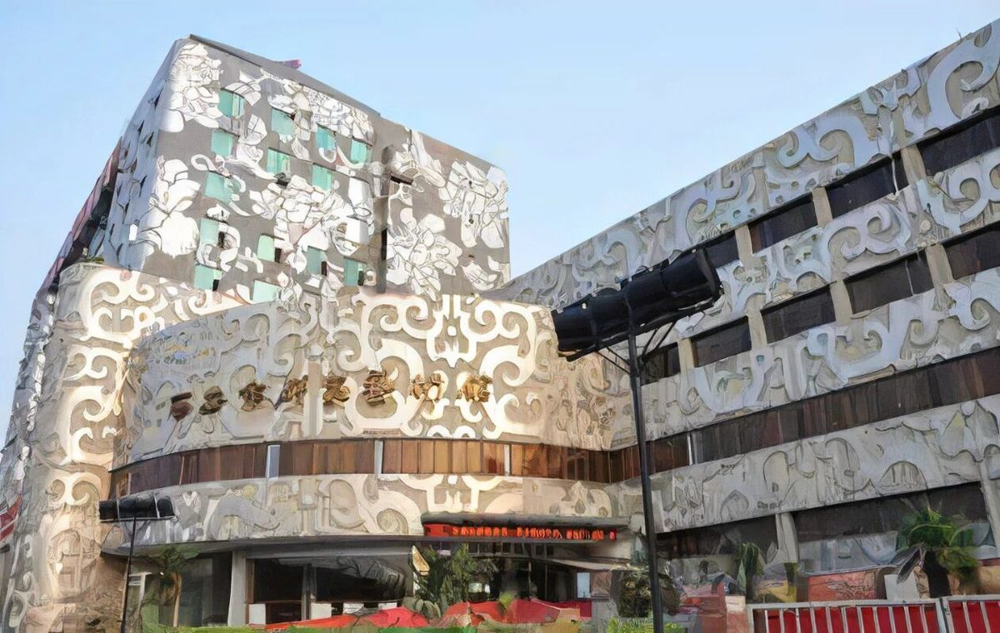
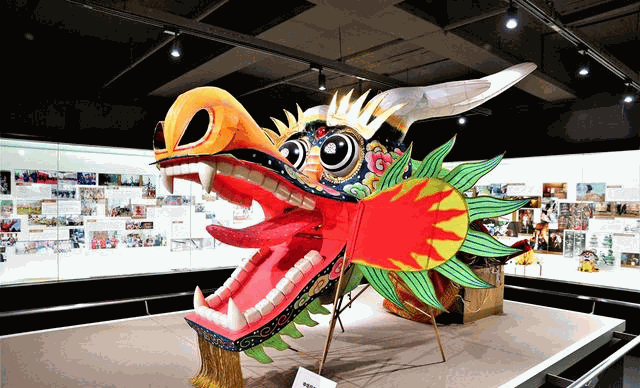
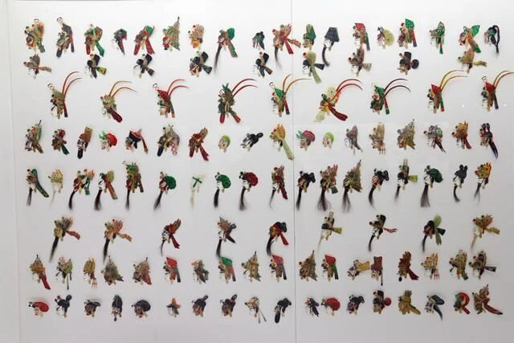
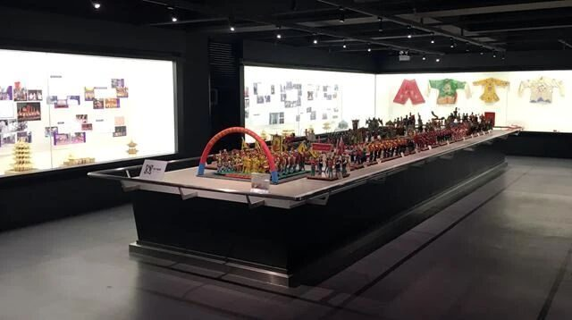
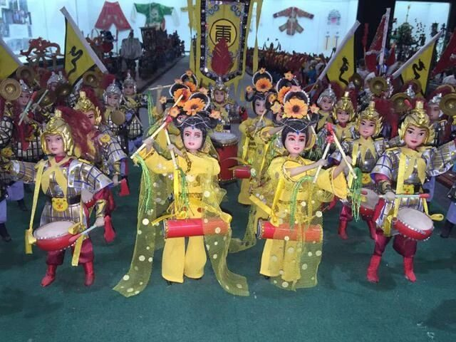
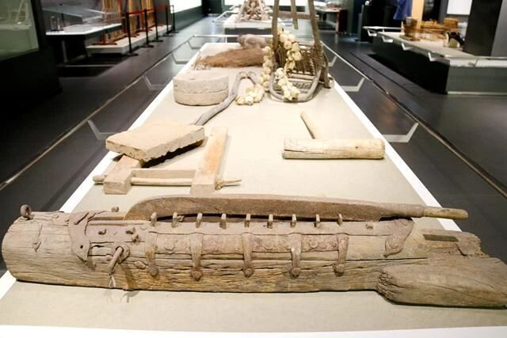
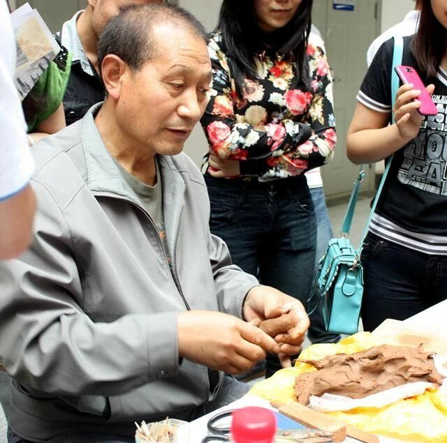
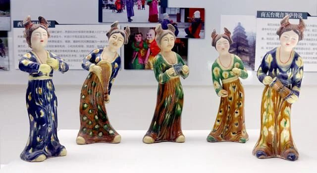
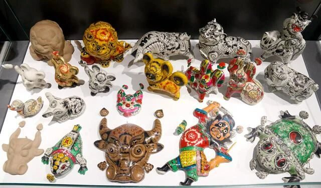

行者无疆实践团 2024年12月28日 18:24
“西安古都，长安梦回”——西安
西安是中华文明和中华民族重要发祥地之一，有着悠久的历史和灿烂的文化，历史上先后有十多个王朝在此建都，也留下了极其丰富的文化遗产。
穿越千年，感受文化的脉动——西安市非物质文化遗产博物馆
西安市非遗博物馆是在西安市非遗工作陈列室基础上历经多年逐步发展起来的，旨在全方位展示西安市丰富的非遗资源和非遗保护成果，以展演结合的活态方式综合展示、演示各个非遗代表作项目的工艺流程、文化内涵。
非遗馆遵循“展示内容真实、完整”以及“活态传承，重在落实”的策展理念，围绕西安市为主的关中非物质文化遗产进行布展。展陈内容主要依据非遗名录的类别分展厅，同时以关中特色非遗项目组群进行辐射，引领参观者融入当地民俗风情，了解西安的非物质文化遗产，感受西安的民俗生活。非遗馆最大的特点是用有形实物展示无形文化，经常性地开展活态展示、展演、互动、传习活动等，以有限的展示空间为传承基地，吸引更多的人参与到非遗保护的队伍中来。
非遗馆主要采用图文与实物相结合的方式，向群众展示西安拥有的非遗项目。其中九楼为第一展厅，展出的是被誉为“关中民俗教科书”的户县社火微缩模型，讲述的是关中以前过年时候耍社火的场景，有仪仗队、锣鼓队、社火组装、抬社火、车社火、木偶等。整个微缩模型，色彩艳丽，形态逼真，仿佛能把人带入那个锣鼓喧天，热闹非凡的喜庆场景里去。面塑《五十六个民族大团结》，112个人物，搭配着不同民族的服饰，载歌载舞，形象的演绎出了民族大家庭爱我中华的场景。
七八楼二三展厅的非遗展品也很多，让人目不暇接。国家级非遗项目，大型关中泥塑组群《关中记忆》，1300多个神态各异的泥塑小人，还有100多个家禽牲畜以及劳动工具、农家小院、鸡窝、拴马桩、戏楼、店铺等30多种，栩栩如生地重现了昔日的关中民俗百态，叫人叹为观止。省级非遗项目张氏风筝制作技艺代表性传承人张天伟的龙造型动态风筝作品，只见色彩斑斓的巨大的龙头，怒目圆睁，跃跃欲试，好像随时准备直飞云霄一般。在博物馆里还能见到很多在现代生活中难寻踪迹的老物件，如纺车、手推独轮车、风箱及古法造纸工具等，还有一些传统的剪纸、刺绣、娃娃哨和核雕等。
西安非遗博物馆作为一个动态的展馆，汇集了广大民间习俗传承的智慧与结晶，为群众提供一个在繁华都市里零距离接触原生态民俗的舞台，对开展非遗教育也有着非常重大的意义。
（部分图片来自网络）








